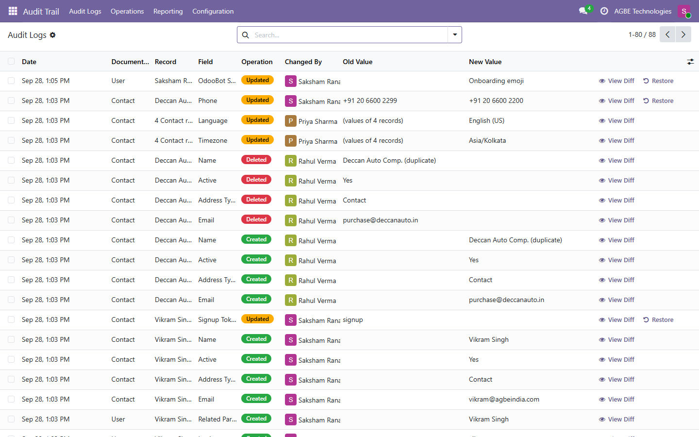
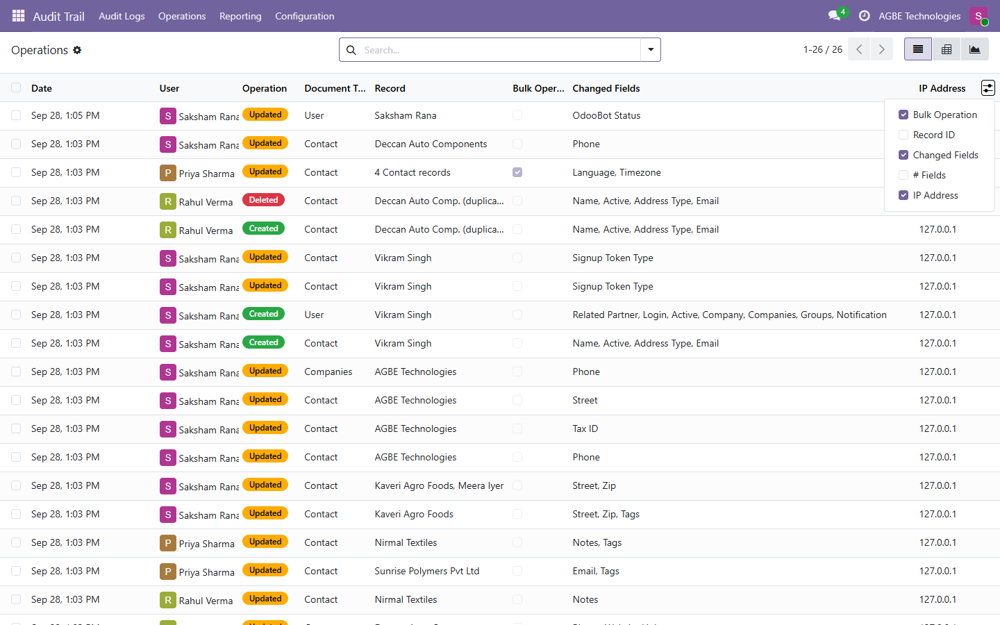
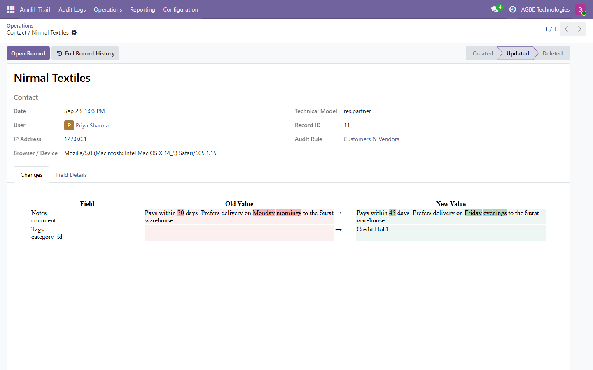
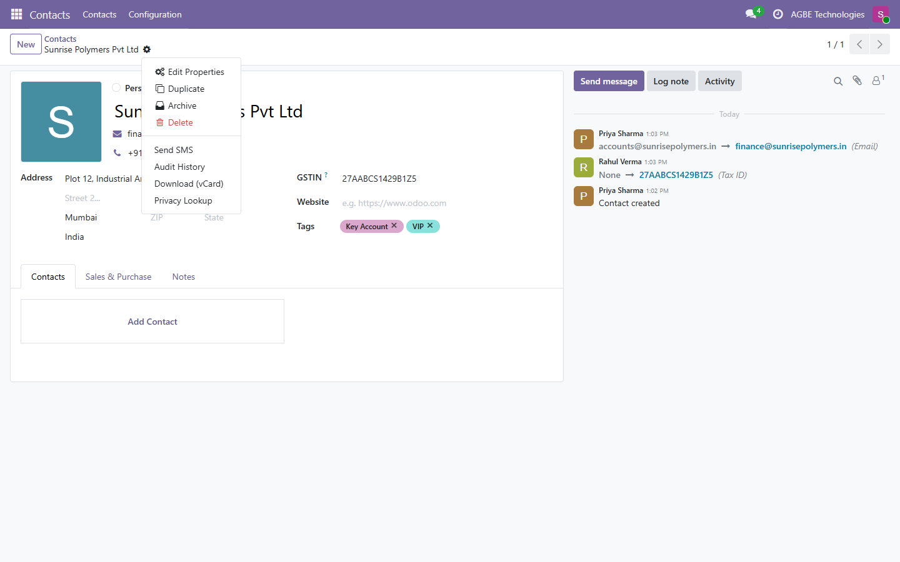
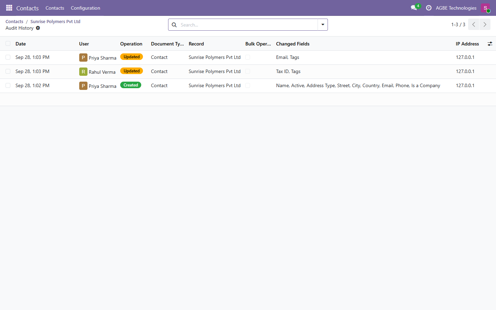
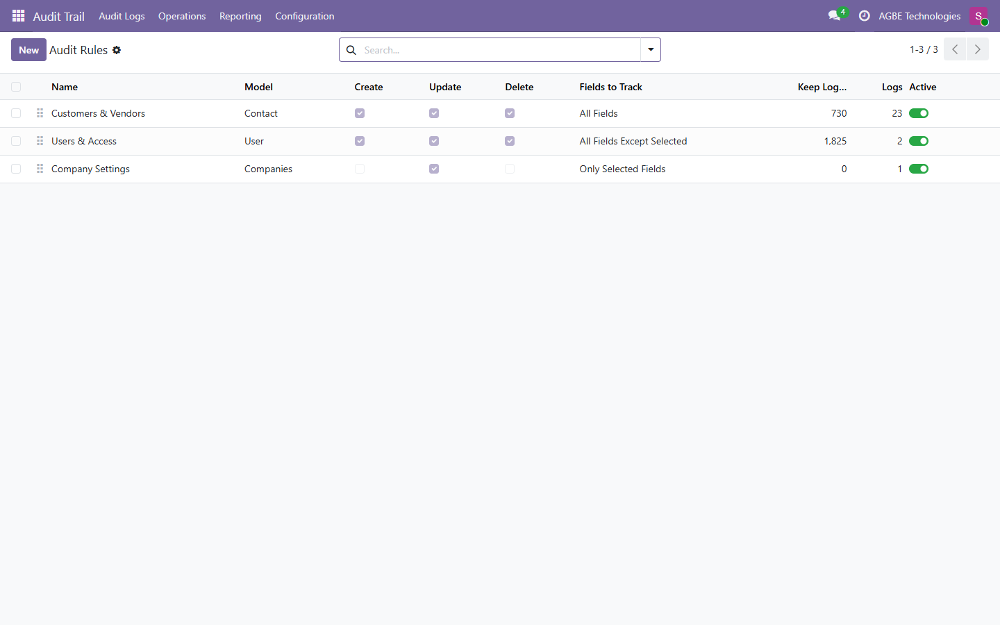
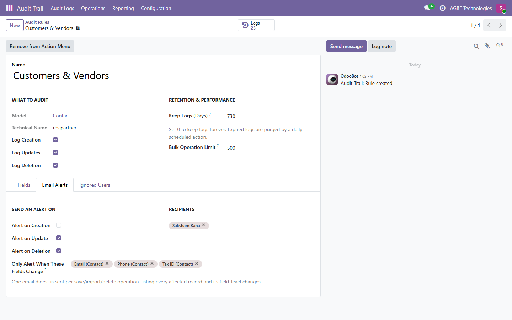
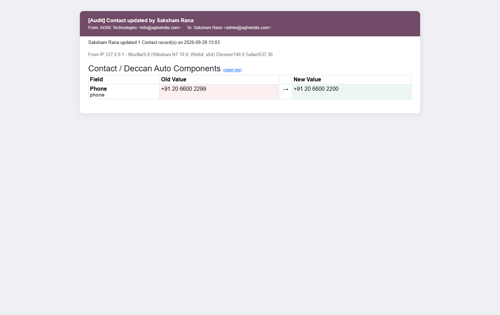
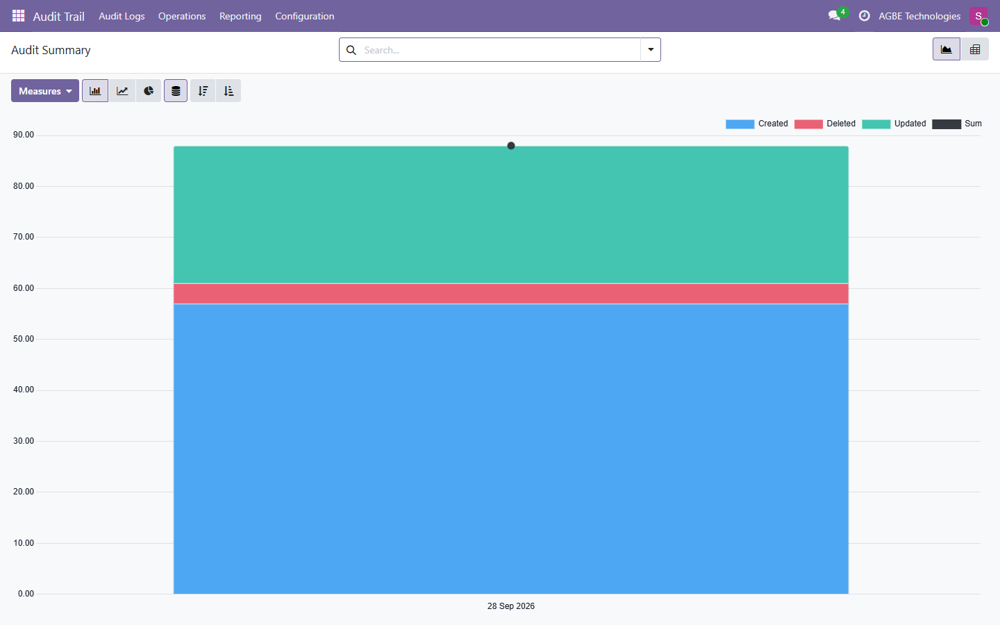
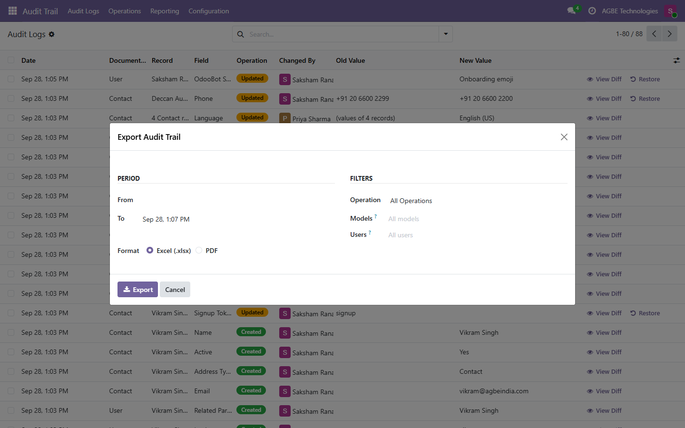

Know exactly who created, changed or deleted what, and when. Pick a model, and every field-level change is logged with a side-by-side diff, exportable to Excel or PDF.
Built for compliance reviews, fraud investigations and plain "who changed this price?" questions.
Create one rule per model and choose which operations to log: creation, update and/or deletion.
Log all fields, only the ones you pick, or everything except an exclusion list. Passwords are never logged.
Click the eye on any log row: old value in red, new value in green, with word-level highlighting.
An "Audit History" entry in the Action menu of any audited record opens its full timeline.
Filter by period, model, user and operation, or export just the logs you selected.
One digest per save, import or delete, optionally only when key fields (price, credit limit...) change.
Relations, selections and dates are stored as the user saw them, so history survives renamed or deleted records.
Set how many days each rule keeps its logs; a daily scheduled action purges the rest.
Logs are read-only for everyone. Only Audit Managers can purge them; Auditors can read and export.
Undo a wrong edit in one click, straight from the log. The restore is itself audited.
Every change records the user's IP address and browser, ready for security investigations.
Mass edits, imports and bulk deletes above a set size write one summary log, so big jobs stay fast.
Every update is shown as a field-by-field diff.
| Field | Old Value | New Value |
|---|---|---|
| Name | Acme Corp | Acme Corporation |
| Tags | VIP | |
| Notes | The quick |
The quick red fox jumps over the sleepy dog |
A walk through the module, from the change log to rules, alerts and reports.
Old and new values side by side, colour-coded by operation, with View Diff and one-click Restore on every row.

Who did what and when, which fields changed, from which IP address, with bulk operations flagged.

Long text is compared word by word: removed words struck in red, added words highlighted in green, plus user, IP and browser.

An Audit History entry in the record's Action menu...

...opens the full timeline of that record: every creation and update, by whom and when.

One rule per model: choose operations, fields to track and how long to keep the logs.

Retention period, bulk-operation limit, alert recipients, and alerts only when key fields change.

Each alert shows the user, the IP address and the old vs. new value, with a link back to the log.

Graph and pivot views of audit activity by day, model, user and operation.

Pick a period, operations, models and users, and download an audit-ready report.
